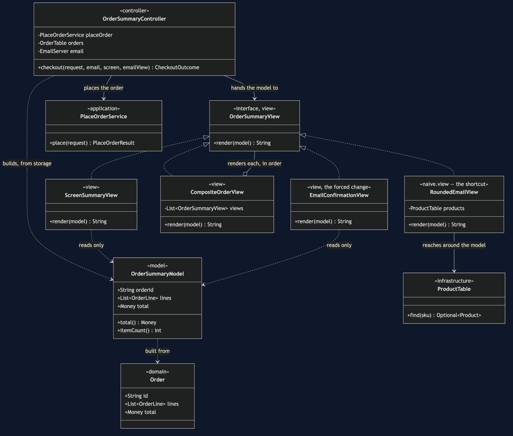
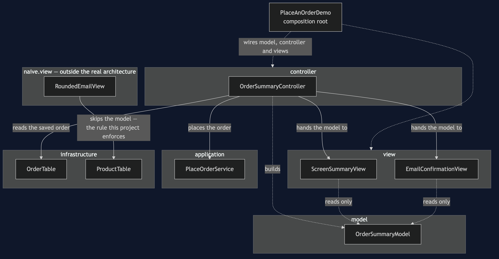
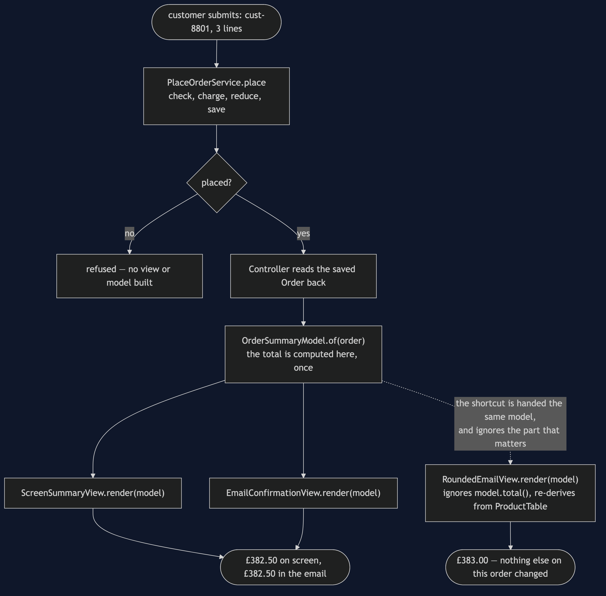
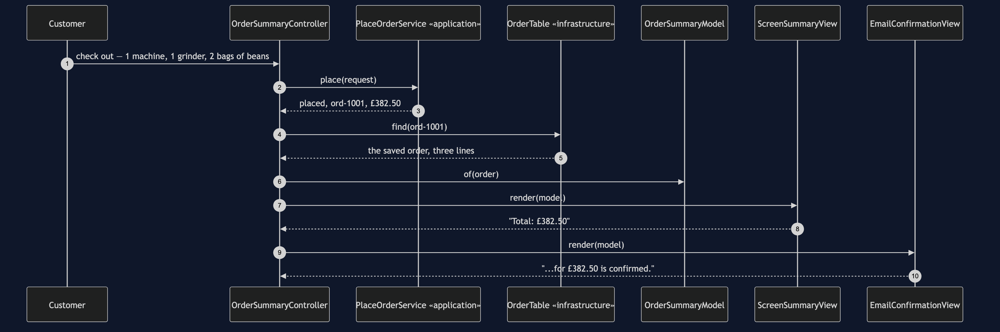
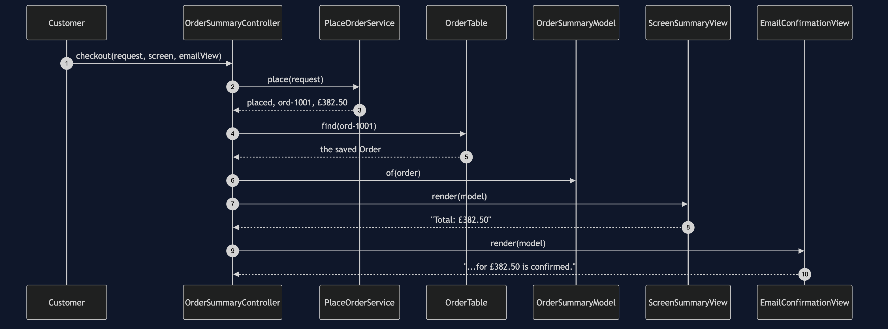
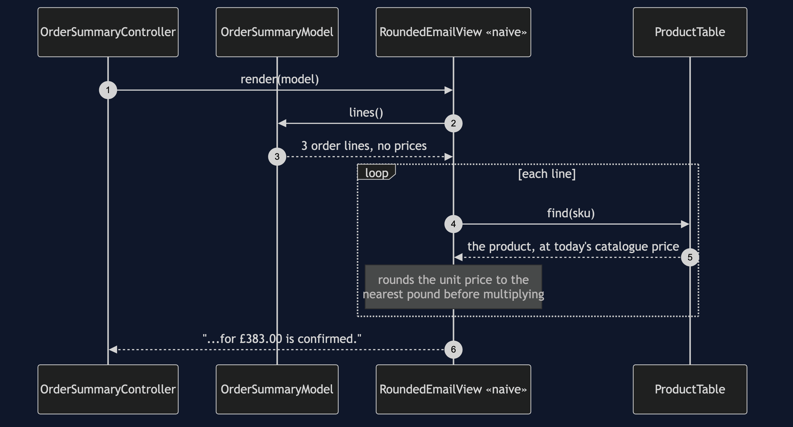
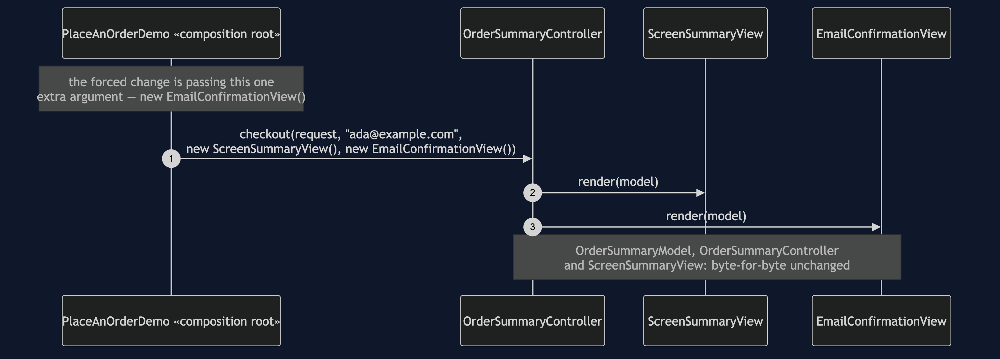
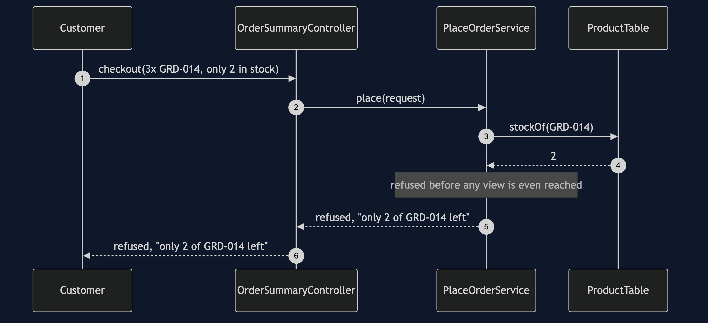

MVC Pattern
src/main/java/com/jk/explore/mvc/
├── PlaceAnOrderDemo.java composition root — the five acts
├── ForcedChange.java counts the bill, from real files on disk
│
├── model/ ← the one place a total is computed
│ └── OrderSummaryModel.java
├── view/ ← may depend only on model
│ ├── OrderSummaryView.java «interface» — one method, one parameter
│ ├── ScreenSummaryView.java
│ ├── EmailConfirmationView.java the forced change
│ └── CompositeOrderView.java
├── controller/ ← the only class that calls application
│ └── OrderSummaryController.java
├── application/
│ ├── PlaceOrderService.java
│ ├── PlaceOrderRequest.java
│ └── PlaceOrderResult.java
├── domain/
│ ├── Order.java
│ ├── OrderLine.java
│ ├── OrderStatus.java
│ ├── Product.java
│ ├── Money.java
│ └── CheckoutRefusedException.java
├── infrastructure/
│ ├── OrderTable.java · InMemoryOrderTable.java
│ ├── ProductTable.java
│ ├── CardNetwork.java · EmailServer.java · PaymentDeclinedException.java
│
└── naive/ ← kept on purpose, outside the real architecture
├── EverythingOrderScreen.java no separation at all
└── view/
└── RoundedEmailView.java the shortcut — skips the modelTwenty-one classes make the real architecture; two more show what it replaces. src/test/java/.../mvc/ArchitectureTest.java is what checks the one rule that matters: no class in view may depend on infrastructure.
Split a screen into three roles — a Model that owns state and computation, a View that only renders, and a Controller that turns input into calls on the model — so that two views of the same fact are structurally incapable of disagreeing.
This is project 64 of architectural-design-patterns, one step from Layered Architecture: the same shared feature, the same four-step checkout underneath, with one new question laid on top — once an order is placed, who is allowed to compute what a customer is shown.
Run
./gradlew runFive acts.
THREE. A second view, the shortcut way.
Order ord-1001 placed.
1 x ESP-001 £249.00
1 x GRD-014 £89.50
2 x BNS-220 £44.00
Total: £382.50
Thank you. Your order ord-1001 for £383.00 is confirmed.
the screen says £382.50. the email says £383.00.
NOTHING IN THE BUILD OBJECTED.FIVE. Add the real second view.
...
Thank you. Your order ord-1001 for £382.50 is confirmed.
both views: £382.50. every time, because neither
one is allowed to add up a price.
FORCED CHANGE: add a second view over the same model
one screen -> one screen and one email, both reading
the same OrderSummaryModel
files added : 1 view/EmailConfirmationView.java
files modified : 1 PlaceAnOrderDemo.java (the composition root)
lines changed : 2
classes across model + controller + views : 21
of those, opened : 1
of those, never opened : 20
AND THE ONE THAT TOOK THE SHORTCUT
naive/view/RoundedEmailView.java imports ProductTable directly
it rounds each unit price itself instead of asking the model
every real view, screen and email alike: agrees, exactlyAnd the acceptance line every project in this category prints identically:
ACCEPTANCE
order ord-1001 for cust-8801: PLACED, 3 lines, £382.50
stock ESP-001 3, GRD-014 1, BNS-220 38
charged cust-8801 £382.50 once
sent 1 confirmation to ada@example.com
refused: not enough stock, unknown product, payment declinedTest
./gradlew testNineteen tests. Three assert the dependency rule on the real packages; one widens it to naive.view and asserts the failure names RoundedEmailView and ProductTable. ViewsAgreementTest is the one worth reading first: twoRealViewsAlwaysAgree proves the guarantee, and theNaiveShortcutReallyDoesDisagree proves the bug is real arithmetic rather than a claim in prose — the burr grinder's £89.50 genuinely rounds to £90 and the total genuinely comes out £383.00.
Technologies and versions
| What | Version | Why it is here |
|---|---|---|
| Java | 21 | The repository standard |
| Gradle | 9.2.1 | The wrapper in this directory |
| JUnit 5 | 5.10.2 | Test runner |
| ArchUnit | 1.5.0 | Test-only. The view/infrastructure rule is written and enforced with it, exactly as in Layered Architecture |
No Spring, no UI toolkit, no database. Every view in this project produces a String.
Learning Material
| Document | What it covers |
|---|---|
docs/problem-statement.md | Two views, one order, two totals |
docs/mvc-pattern-explained.md | The pattern, classic vs web MVC, MVP/MVVM, the forced change, the bill |
docs/class-diagram.md | The types, and the one class with a second dependency |
docs/architecture-diagram.md | What is allowed to know about what |
docs/data-flow-diagram.md | One order, built into one model, read by every view |
docs/sequence-diagram.md | Who calls whom — written for a listener with the screen off |
docs/uml-diagram.md | Four sequences: the pattern, the shortcut, the forced change, a refusal |
docs/animation.html | Five steps in a browser |
docs/prerequisites.md | What you need to know, and what you explicitly do not |
docs/session.md | A one-hour taught session with three exercises |
docs/spec.md | The generated specification |
docs/youtube.md | Title, description and chapters |
The pattern in one picture
Four classes implement OrderSummaryView; only one of them has a second dependency, straight to ProductTable, and that single extra arrow is the whole bug.

What is allowed to know about what
Every real view has exactly one arrow, and it points at the model. The dashed box is the shortcut the architecture test exists to catch.

How one order becomes two agreeing outputs
The model is built exactly once; the dashed path is the only way to reach a different number.

Who calls whom, in order
The sequence written to work with the screen off: a model built once, handed to two views, neither of which can compute anything.

All four sequences
The full set from docs/uml-diagram.md.
One. One order, rendered by two views that cannot disagree.

Two. The shortcut — a view that rounds its own prices.

Three. The forced change — a real second view, nothing else touched.

Four. A refusal — not enough stock.

Video
Built from video/scenes.py by video/build_video.sh. The rendered file is not committed.
When this is too much
A Model/View/Controller split earns its keep the moment more than one output has to represent the same state. It is not worth it for a program with exactly one output that will never grow a second — a single method that computes and prints in one pass is not a shortcut in that case, it is the whole of what is needed.
Where this sits
Project 64 of architectural-design-patterns, one step from Layered Architecture — the same shared feature and application layer, with the presentation side split into a model and views this time instead of a single screen class.
The next project, Hexagonal Architecture, changes the thing this category's first project admitted it had not fixed: the application layer still names the infrastructure package to compile. This project does not touch that; its whole subject is what happens once an order has already been placed.
Also available with a framework
MVC with Spring MVC Pattern reruns this idea on a real framework, and shows what the framework adds and where it can undo the pattern. Watch this project first.